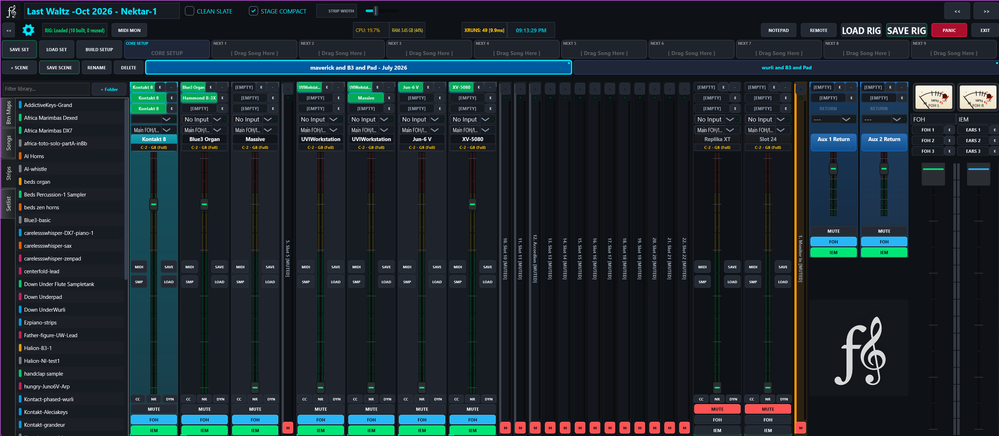
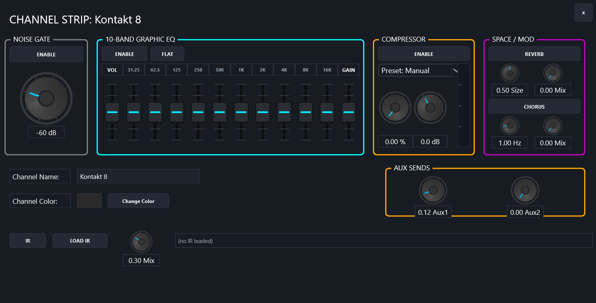
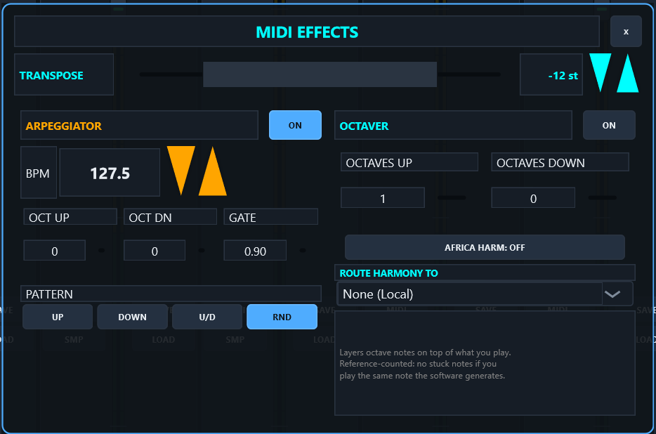
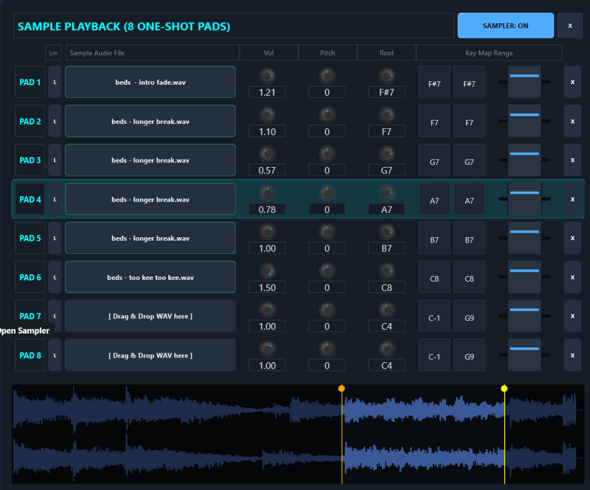
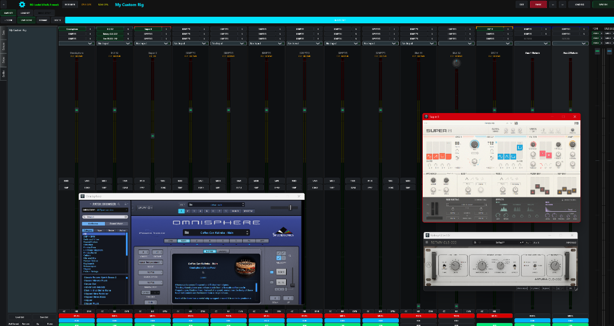
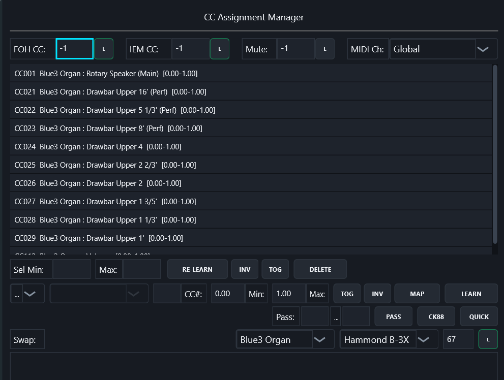
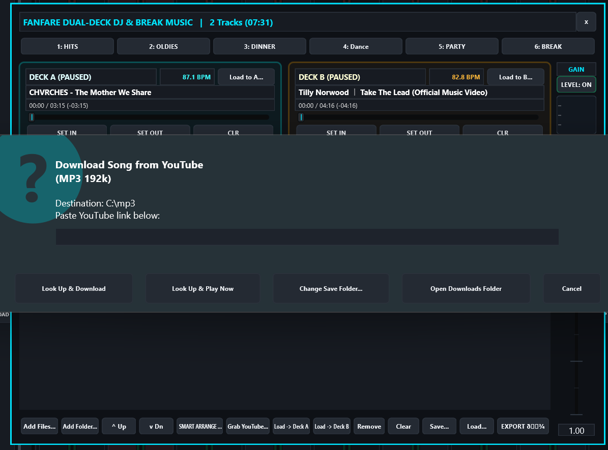

Built for the stage. Zero stuck notes. Zero dropouts.
A rack-based VST3 host for live keyboardists — atomic song switching,
dual-bus mixing, MIDI learn, setlist preloading, instant panic recovery.
Fanfare is built with one mission: make setting up your live rig an absolute breeze, then completely get out of your way on stage — so you can perform music, not run an IT desk.
Splits. Sample triggering. Arpeggiators, octaves and harmonizers. Set it, and forget it. While you're playing, it preloads the next setup in the background so the switch happens seamlessly. Nobody waits around.
Independent master faders and analog-style peak VU meters for FOH (front of house) and IEM (in-ear monitors) — route the two buses separately and crank your stage mix without touching what the venue hears.
Features
Songs, Scenes & Setlists
Complete patch snapshots stored as clean, versioned JSON. Jump between song sections via MIDI triggers, and preload the next song while you play.
Channel Strip DSP
Noise gate, graphic EQ, compressor, chorus, reverb and convolution per slot — without adding external plugins.
Latch, Toggle & Swap From MIDI
Press-on/press-off parameter toggles, per-strip mute toggles, and A/B swaps between loaded instruments. Swaps fade out with an all-notes-off drain — zero stuck notes by design.
Parallel, Hang-Proof Loading
Every plugin builds concurrently, interleaved by engine. Same-plugin instances serialize safely; NI plugins restore on the GUI thread like interactive loads. One misbehaving plugin can't stall the rig.
Long-Press Learn
Hold MUTE / FOH / IEM on any strip to arm its MIDI learn instantly, or arm-then-wiggle in the CC Assignment Manager.
Sampler & Waveform Editor
Internal sample player with sample-accurate trim handles, root-key mapping, drag-and-drop WAVs, and octave shifting.
Break-Music DJ Player
Dual-deck player with YouTube grab, BPM display and smart arranging — between-set music without leaving the rig.
Atomic File System
Saves write to temp files first with auto-rotated backups. Power loss or crashes never corrupt your setlists.
Data Sovereignty
No cloud sync, no accounts, no telemetry. Your patches are human-readable JSON files you fully control.
Screenshots







Full live mixer interface with setlist manager, dual FOH/IEM mixes, and peak VU metering. Click an image to expand.
Song switches trigger the builder on a background thread. Every plugin builds in parallel, interleaved by engine; same-plugin instances serialize, and single-instance plugins restore on the GUI thread.
2
Silent Validation
New instances are validated with a silent processBlock before they're trusted.
3
Atomic Pointer Swap
Pointers swap under callback lock in under a millisecond — no allocation on the audio thread.
4
Rollback Safety
If a background build fails, the swap never happens and the current rig stays live.
Download
Standalone VST3 host binary with native ASIO & WASAPI support. No installer required.